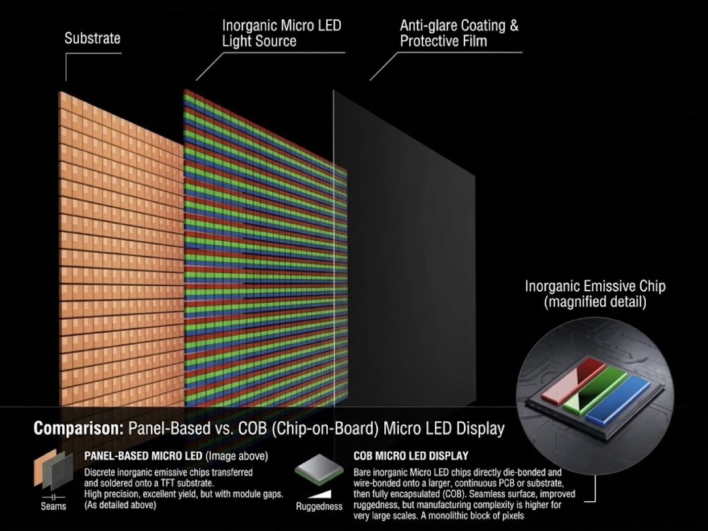

By David
How do you verify a COB LED display manufacturer? You verify a cob led display manufacturer by auditing the production line itself rather than the catalogue: count the COB lines, watch the encapsulation and aging steps, and demand evidence that matches the plant you are shown. A genuine manufacturer shows its own equipment, its own staff, and a process that runs from chip on board encapsulation through aging test to export packing. This guide gives buyers a factory-audit checklist and tells you exactly what evidence to collect before you place an order.
Choosing a supplier for COB fine-pitch displays is a sourcing decision, not only a price decision. A display sold as COB may come from a real factory that runs its own COB lines, or from a trading company that buys finished modules and resells them. The two look almost identical in a quotation, and they behave very differently once the order is placed and the first fault appears.
This buying guide is written for AV integrators, LED distributors, rental companies, and OEM/ODM teams that need to separate a genuine cob led display manufacturer from a reseller. Rather than marketing, it gives you a framework you can run on any supplier, including us, and it points out the evidence that is hard to fake. Our own approach to the same question is set out in this factory verification guide, and the wider technology is explained in our COB versus SMD buying guide.
COB displays fail in different ways from SMD displays. A weak COB process shows up as colour shift, dead pixels near the edge of a module, or moisture problems months after installation. When a fault appears, the buyer needs a manufacturer that can replace modules and correct the process, not a trader that forwards the complaint to an unknown third party it never controlled.
Verification also protects the project schedule. A supplier without its own lines cannot control the aging test or the quality check, so it cannot honestly promise when a batch will ship. A manufacturer that owns the process controls the lead time as well as the quality, which is why the audit is worth the effort before the order, not after.
| Supplier Type | What They Own | What to Watch For |
|---|---|---|
| Real COB manufacturer | COB lines, encapsulation, aging, QC | Traceable production and audit access |
| Assembler | SMT or box build only | May buy COB modules from elsewhere |
| Trading company | Office and warehouse | No line to audit, price talk only |
| OEM/ODM partner | Assembly plus brand work | Confirm who makes the COB panel |
A factory audit is a short, structured visit or a live video walk. You are not there to admire the building; you are there to confirm that the capability described in the quotation actually exists on the floor. Ask for the audit before the order, while you still have leverage, and write the answers down so the specification and the supplier's claims stay aligned.
COB means chip on board: the LED chips are bonded and encapsulated directly onto the board, rather than being packaged into individual SMD lamps first. That encapsulation step is the heart of the process, and it is the step a trading company cannot show you. If a supplier cannot walk you through encapsulation, the COB claim deserves a second look before you commit to a fine-pitch project.
On a real line you should see the boards, the encapsulation equipment, and the inspection that follows. Ask what happens to a board that fails inspection, and where the repaired units go. The answer tells you whether the process is controlled step by step or handled ad hoc, and it is one of the clearest signals you will get during an audit.
Documents alone do not prove a line exists, but they help you cross-check the story. A manufacturer should be able to show production records, aging logs, and packing lists that match the plant you saw. If the documents and the audit tell the same story, the supplier is consistent; if they disagree, you have found the gap that matters.
A supplier that owns its process also tends to offer structured after-sales support, because it knows the product it built. Look for a clearly stated warranty period and a named technical contact, since a display project continues long after the shipment leaves the factory. Our own product pages, from the COB EF series upward, are backed by a two-year warranty and a 24-hour technical response precisely because the process sits under one roof.
The best audit is a set of direct questions. Ask how many COB lines the factory runs, which pixel pitches are in mass production, and which encapsulation methods the plant supports. A genuine manufacturer answers with specifics and offers to show you the floor; a reseller answers with delays and defers to a partner you never meet.
Ask, too, about the smallest pitch the plant can mass-produce, because fine-pitch COB is where process control matters most. Bring the questions to the audit and record the answers in writing, so that later, when a module needs replacing, the plant and the specification still describe the same product.
The pitch range a factory runs is a clue to its real capability. Fine pitches demand tighter process control than coarse pitches, because the bonding and the encapsulation must be more precise. A supplier that claims a fine pitch should be able to show the boards and the lines behind the claim, not only a specification sheet, because the tighter the pitch, the less the process tolerates shortcuts.
Encapsulation methods also differ between plants. Some run one method; others run several and can build SMD, GOB, and COB on the same floor. A plant with more than one encapsulation system can advise you honestly on which type suits your project, instead of pushing the single option it happens to own.
| Check | What It Proves | How to Confirm |
|---|---|---|
| Number of COB lines | Real production scale | Count them on the audit |
| Pitch in mass production | Fine-pitch capability | See boards and records |
| Encapsulation methods | Flexible process | Ask which systems run |
| Aging and QC stations | Controlled quality | Watch the process live |
| Cabinet workshop | Custom build ability | See the workshop |
Certain answers should slow you down. A supplier that refuses a visit or a video audit, or that shows only a showroom and no plant, may not control production at all. A supplier that cannot explain the encapsulation step, or that treats the aging test as an afterthought, is a real risk on a fine-pitch project where the process is the product.
Another red flag is a price that sits far below the market for the pitch. Fine-pitch COB costs what it costs because the process is genuinely expensive to run and to control. A quote that ignores that reality often hides a downgraded panel, a second-grade chip, or no aging stage at all, and the saving is repaid in field failures later.
You do not always need to fly to the factory. A live video audit on a call can be almost as useful, provided you direct it. Ask the supplier to walk the camera along the COB line, stop at the encapsulation station, and open the aging room. Record the call, so you can compare it against the next supplier and against the documents they send.
Ask for photos taken during your call rather than stock images from a catalogue. A timestamped photo of the line, the aging rack, and the packing area is far harder to fake than a glossy brochure page. The goal is a trail of evidence that fits together, not a single impressive picture that tells you nothing about the process.
The right supplier depends on the project. A rental company needs ruggedness and fast module replacement; an OEM buyer needs a partner that can build to a specification; a distributor needs a stable supply of standard pitches. The audit should test the capability your project actually needs, not the capability that is easiest to demonstrate.
For a fine-pitch indoor installation, confirm that the supplier mass-produces the pitch you need and can supply replacement modules later. For a custom cabinet project, confirm the cabinet workshop during the same audit, so a single visit answers both the display question and the structure question.
Verification does not end at the purchase order. Ask for a sample or a pre-production unit and test it against the specification. Compare the delivered panels with the ones you saw during the audit, and record the module batch so that any future replacement matches the colour and the build of the original.
Keep the audit record, the photos, and the specification together in one file. When a fault appears months later, that file tells you what the supplier promised and what it actually built, which turns a difficult conversation into a short one. A supplier that welcomes this level of scrutiny is usually the one worth keeping.
Skipping verification saves a little time and costs far more later. A COB display built on a weak process can fail in the field, where repair is expensive and the client is unhappy. The audit costs a few hours; a failed installation can cost a client, a claim, and a reputation that took years to build.
The same logic applies at the fine-pitch end of the market. The tighter the pitch, the less the process tolerates shortcuts, and the more a real manufacturer's day-to-day discipline is worth to the buyer. Verification is simply how you tell that discipline apart from a convincing catalogue and a low price.
Verifying a COB supplier is a process, not a single question. Run the checklist, watch the encapsulation and the aging steps, cross-check the documents against the floor, and test a sample before you commit to volume. A genuine cob led display manufacturer will welcome the audit and make time for it; a reseller will resist it, and that resistance is itself the answer you needed.

Ask us the audit questions in this guide. We will show you our COB lines, the encapsulation step, and the aging process, so you can verify us the same way you verify any supplier.
Request a Factory AuditChat on WhatsApp